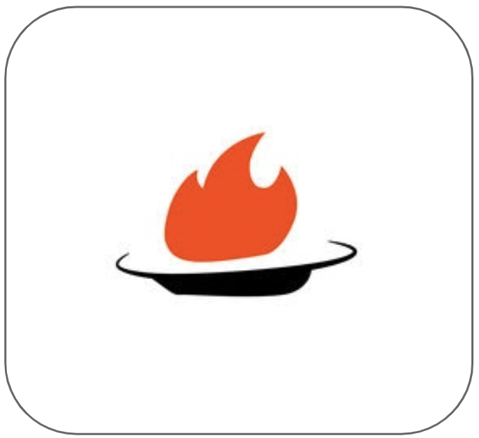

HotPlate
HotPlate is a dish-specific food reviewing and recommendation app to help users discover and explore restaurants in Evanston.
SKILLS
Design Research, Prototyping & Wireframing with Sketch, App Design
CLIENT
HotPlate Startup(eDTC Client, 2017)
TEAMMATES
Alvin Chen, Abby Pratt, Diana Smith
TIMELINE
10 weeks
HotPlate is a startup at The Garage Northwestern whose app helps users discover dish-specific recommendations for restaurants in the downtown Evanston area. We were tasked with understanding HotPlate’s users and potential markets to design features for the application that would attract a broader audience.
My contributions to the project included conducting user interviews, surveying the current food app market, paper prototyping, and helping to put together the wireframe in Sketch as a deliverable to HotPlate's Chief Operating Officer.
After interviewing dozens of people and comprehensive research of the current app and dining out market, the team found that there are 3 major problems to inform the redesign direction:
People don't trust online reviews and would prefer friend recommendations.
10 of 23 users interviewed expressed their concern that existing food apps on the market include a fair amount of untrustworthy information, especially the comments written by various anonymous or unfamiliar reviewers. As such, users tend to trust their friends’ recommendations when choosing restaurants or dishes.
People with dietary restrictions have difficulty finding food they want to eat.
All the potential users interviewed who are under certain dietary restriction claim that they do not know of or use any currently existing food apps that provide dietary information of dishes for users in a user-friendly and convenient way.

People are very visual and want to see images of food options.
15 of 22 potential users mentioned that when they use the food app to figure out what they would like to eat, it is usually the picture of dish that attracts them. They do not like to make decisions on food purely from text.
To address user needs for trustworthy recommendation sources, valid dish specific and restaurant logistical information, and an intuitive, visual design we conducted user testing on paper prototypes for the following features:
-
Veggie Veggie, a dish search filter system that displays search results of dishes with specific special dietary needs tags
-
Fellow Foodies, a recommendation system that highlights friends' rated dishes from overall high-rated reviews
-
1 : 1 Dish to Dish photograph visual presentation of results
-
Foodie Map feature detailing the restaurants nearby in downtown Evanston
Homescreen: Personalized Dish Discovery Filter
Selecting the filter results in a change in displayed dishes to reflect those tagged with the filter key. Dish image also accordingly links to an individual dish page that showcases its restaurant, nutritional, and reviews or ratings information stored in the HotPlate database.
Fellow Foodies Recommendation System
Fellow Foodies provides a database of dishes with friend ratings and comments, HotPlate user ratings and comments, and information about nutritional, location, and restaurant logistics.
With HotPlate's redesign, people concerned with health, food allergies, and special diets can utilize the filter system to make the search process more efficient. Additionally, improving restaurant location and logistical information presents users with comparable options for finding a place to eat in terms of distance and ambiance, as described in associated comments or reviews.
